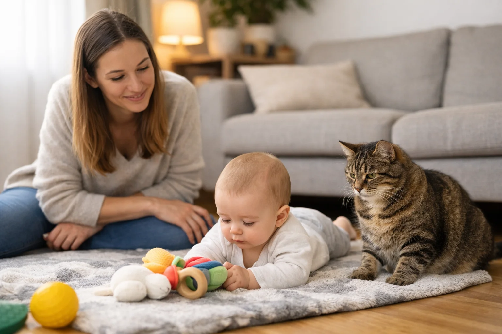

Baby kommt, Katze bleibt
Wie sich Familien vorbereiten können, ohne die Katze pauschal zum Problem zu machen.
Farbenfrohe Lesewelt Verlag
Sie berichten über Schwangerschaft, Familienalltag, Katzenhaltung oder neue Ratgeber? Hier finden Sie Buchinformationen, Bildmaterial und eine unkomplizierte Möglichkeit, ein Rezensionsexemplar anzufragen.
| Titel | Baby und Katze sicher zusammenführen |
|---|---|
| Untertitel | Der Praxis-Ratgeber für Eltern: Stress vermeiden, Kratzen vorbeugen, Hygiene & Alltag sicher klären - von Schwangerschaft bis Kleinkind |
| Autorin | Andrea Blum |
| Verlag | Farbenfrohe Lesewelt Verlag |
| Format | Taschenbuch |
| ASIN | B0GTDN1458 |
| Verfügbarkeit | Taschenbuch bei Amazon erhältlich |
| Zielgruppe | Werdende Eltern und junge Familien mit Katze, von Schwangerschaft bis Kleinkindphase |
Wie sich Familien vorbereiten können, ohne die Katze pauschal zum Problem zu machen.
Warum einzelne Internettipps oft keine tragfähige Alltagsroutine ergeben.
Wie klare Standards Entscheidungen in müden Momenten erleichtern.
Welche Alltagsbereiche relevant sind und warum die Katze nicht der einzige Faktor ist.
Warum Regeln, Rückzugsorte und Begegnungen mit der Entwicklung mitwachsen müssen.
Eine unabhängige, auch kritische redaktionelle Einordnung ist ausdrücklich willkommen.
Das Material darf im Zusammenhang mit redaktioneller Berichterstattung über das Buch oder den Farbenfrohe Lesewelt Verlag verwendet werden. Sinnentstellende Bearbeitungen und eine davon unabhängige kommerzielle Nutzung sind nicht gestattet.

WEBP, 1600 × 2560 px, ca. 139 KB
Buchcover herunterladenWEBP, 648 × 363 px, ca. 42 KB
Verlagslogo herunterladen
WEBP, 1536 × 1024 px, ca. 116 KB
Ratgebermotiv herunterladenBildnachweis: Farbenfrohe Lesewelt Verlag
„Baby und Katze sicher zusammenführen“ ist ein alltagsnaher Praxis-Ratgeber für werdende Eltern und junge Familien mit Katze. Das Buch ordnet typische Fragen zu Schwangerschaft, Babybett, Hygiene, erster Begegnung, Rückzug und Alltag in klare Zonen, Standards, Checklisten und Wenn-Dann-Regeln - ruhig, praktisch und ohne Garantieversprechen.
Wenn ein Baby kommt, verändern sich Routinen, Räume und Aufmerksamkeit - auch für die Katze. Viele Familien suchen dann zwischen alarmierenden Warnungen und einzelnen Internettipps nach einem tragfähigen Mittelweg. Der Ratgeber „Baby und Katze sicher zusammenführen“ bündelt typische Fragen in ein ruhiges Alltagssystem: Baby-Zone, Katzen-Zone und Übergangsbereiche, klare Regeln für Schlafplätze und Aufsicht, Rückzugsorte für die Katze, Hygieneroutinen und einfache Wenn-Dann-Regeln für müde oder unklare Situationen.
Das Buch richtet sich an werdende Eltern und junge Familien, die ihr Baby schützen und ihre Katze weiterhin als Teil des Familienlebens mitdenken möchten. Es ersetzt keine medizinische, tierärztliche oder individuelle Verhaltensberatung. Stattdessen hilft es, wiederkehrende Entscheidungen vorzubereiten, sensible Themen einzuordnen und zu erkennen, wann fachliche Unterstützung sinnvoll ist.
Andrea Blum schreibt alltagsnahe Ratgeber für Familien, die klare Standards statt perfekte Pläne suchen. Im Mittelpunkt stehen ruhige Orientierung, praktische Routinen und Entscheidungen, die auch an müden Tagen funktionieren. Ihr Ansatz: weder dramatisieren noch verharmlosen – sondern Situationen so ordnen, dass der nächste Schritt klar wird.
„Baby und Katze sicher zusammenführen“ erscheint im Farbenfrohe Lesewelt Verlag.
{kind=link}
{kind=link}